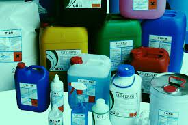
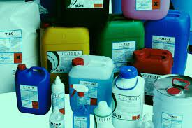

Use fewer chemicals to clean your home.
Natural cleaners are just as effective at getting the house clean. It's an easy switch that makes a big difference. Using toxic chemicals like bleach and ammonia
to clean your home is not only bad
for the water supply, it's not necessary. With natural cleaners, you don't have to worry that you're contributing to water pollution when you use them.
 

.jpeg)
Dispose of waste properly.
Never pour something that isn't biodegradable down the drain. When it is necessary to use something that's toxic to the water supply, such as paint or ammonia,
take care to dispose of it properly. If you're not sure how to get rid of something, check your local government's website or contact your sanitation department to find out how toxic waste should be disposed of in your community.
The following materials should never be poured down the drain:
, Paint
, Motor oil
, Cleaning solvents
, Ammonia
, Pool chemicals

Don't flush medication.
Use a local “take back” program for safe disposal instead. Medication is made with a variety of substances that can be detrimental to the water supply.
Local "take back" programs allow you to turn in medication
so it can be disposed of properly and without any risk of contamination.That way it won't end up back in the drinking water,
where it can harm people and animals.

Conserve as much water as possible.
Conservation is an important way to help preserve water as a global resource. Treating water so it's clean enough to drink and use around the house requires a lot of energy,
so it's important to conserve as much as possible,
especially in areas where droughts are occurring.
Adopt the following habits to conserve more water around your house:
# Take showers instead of baths, since baths require more water.
# Turn off your faucets when you aren't using water, such as when you're brushing your teeth.
# Don't overwater your lawn. Make sure lawn sprinklers are turned off when it rains.
# Water your garden before the sun comes up or after it sets to reduce evaporation, which leads to water waste.